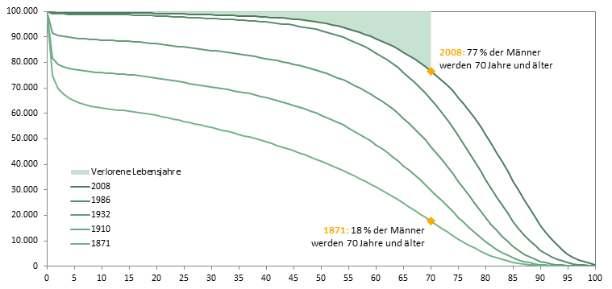
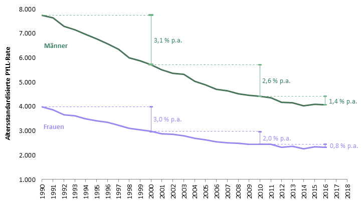
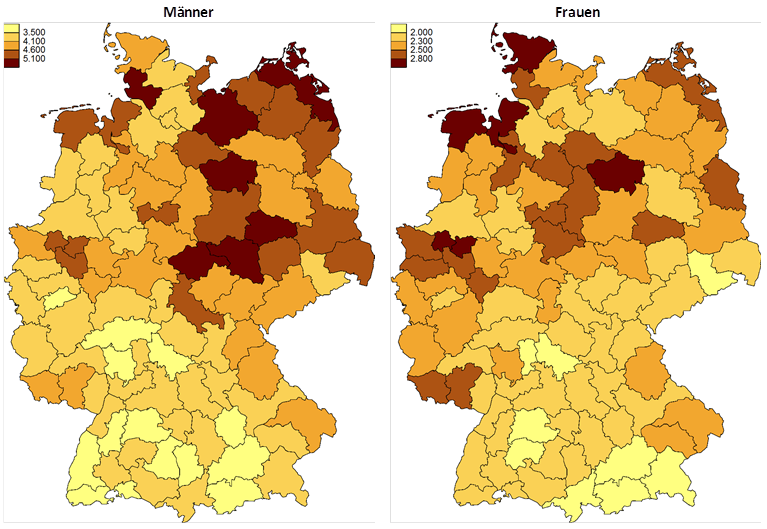

Premature mortality in Germany stagnates after a strong decline
Since 1990, Germany has almost cut premature mortality in halve, measured by the PYLL rate. In 2016, males lost around 4,000 life years per 100,000 inhabitants. The corresponding value for women was around 2,300 lost life years. PYLL rates for females and males have stagnated for several years after a significant but slowing decline. Regional emphases for women are found in the North of the Old Länder, for men in the New Länder.
Hintergrund und säkularer Trend
Aus dem Zeitraum von 1871 bis 2010 wurden exemplarisch fünf Periodensterbetafeln für Männer (Statistisches Bundesamt 2012) ausgewählt, um die langfristige Entwicklung der Sterblichkeit in Deutschland zu zeigen (Abb. 1). Stark vereinfacht zeigt die Absterbeordnung von 1871/81 nach steilem Abfall wegen enormer Säuglings- und Kindersterblichkeit ein Dreieck mit nahezu linearem weiterem Schwund der überlebenden Bevölkerung. Diese Form der Überlebenskurve verweist auf große Altersunabhängigkeit des Sterberisikos im Erwachsenenalter und auf Infektionskrankheiten als damals wichtigste Todesursache. Die weitere Entwicklung von 1910/11 bis 2008/10 zeigt ein nahezu vollständiges Verschwinden der Frühsterblichkeit: Starben im Zeitraum 1871/81 35 % der Jungen vor ihrem 5. Geburtstag, reduzierte sich dieser Anteil auf 0,5 % im Zeitraum 2008/10. Die Entwicklung einer immer deutlicheren Ausbauchung der Überlebenskurve im Erwachsenenalter zeigt, dass sich erst im 20. Jahrhundert eine starke Abhängigkeit der Sterblichkeit vom Lebensalter ausgeprägt hat. Ferner zeigt sich eine fortgesetzte Rechtsverschiebung der Überlebenskurve, d. h. eine deutliche Verringerung der Sterblichkeit auch im höheren Alter. Die ursprüngliche Dreiecksform der Überlebenskurve nähert sich langsam der Form eines Rechtecks (sog. Rektangularisierung).
Auf den Überlebenskurven 1871 und 2008 ist jeweils markiert, wie viele Männer ihren 70. Geburtstag erleben konnten; dies waren 1871/81 nur 18 %, 2008/10 hingegen 77 %. Der grün eingefärbte Keil oben im Diagramm entspricht den verlorenen Lebensjahren unter 70 Jahren im Zeitraum 2008/10.
PYLL-Rate – ein Maß der vorzeitigen Sterblichkeit
Eine geeignete numerische Größe für die Darstellung dieses Sachverhalts ist die PYLL-Rate [2]. Ihr Zähler umfasst für alle Sterbefälle des entsprechenden Gebiets und Zeitraums die Summe der individuell verlorenen Lebensjahre (d. h. 70 minus Sterbealter, falls der Tod vor dem Alter von 70 Jahren eingetreten ist), ihr Nenner die durchschnittliche Bevölkerung des betrachteten Gebiets unter dem Alter von 70 Jahren. Dabei ist die PYLL-Rate auf 100.000 der Bevölkerung normiert. Diese „rohe“ PYLL-Rate wurde nach der „alten Europa-Standardbevölkerung“ altersstandardisiert [3]. Die gemessene Einheit ist „verlorene Lebensjahre je 100.000 Einwohner unter 70 (vLJ)“.
Technische Einzelheiten
Es wurden die Angaben von Eurostat verwendet (Eurostat, 2018). Da die Sterbefallstatistik meist in Fünfjahresaltersklassen vorliegt, wurde so vorgegangen, dass für Todesfälle in einem Alter von über fünf Jahren ein Sterbealter in der Mitte des jeweiligen Fünfjahreszeitraums, für Todesfälle unter fünf Jahren ein Sterbealter von einem Jahr angenommen wurde. Die mittlere Jahresbevölkerung der Kreise wurde als Durchschnitt aus den stichtagsbezogenen Bevölkerungszahlen zum 1. Januar des betreffenden Jahres und zum 1. Januar des Folgejahres ermittelt.
Die Raumordnungsregionen (ROR) wurden kreisscharf ermittelt, grenzübergreifende ROR Baden-Württembergs wurden nach Land aufgeteilt.
Zeitliche Entwicklung auf Bundesebene
Erstes Ziel der Analyse war, die zeitliche Entwicklung der vorzeitigen Sterblichkeit in Deutschland für die jüngere Vergangenheit darzustellen. Abbildung 2 zeigt von 1990 bis 2016 sowohl für Männer als auch für Frauen einen Rückgang der PYLL-Rate, und zwar von 7.744 auf 4.054 vLJ (Männer) bzw. von 3.989 auf 2.325 vLJ (Frauen). Ihr vorläufiges Minimum wurde bei beiden Geschlechtern im Jahr 2014 beim Stand von 4.015 vLJ für Männer bzw. 2.264 vLJ für Frauen erreicht. Über den gesamten Verlauf war die PYLL-Rate bei Männern nahezu doppelt so hoch wie bei Frauen. Der Rückgang der PYLL-Rate wies über diesen Zeitraum hinweg jedoch deutliche Unterschiede auf: In den 90er Jahren lag er für beide Geschlechter bei etwa 3 % jährlich, in den 00er Jahren bei etwa 2 %, um in den 10er Jahren in einer Stagnation zu münden.
Regionale Schwerpunkte der vorzeitigen Sterblichkeit
Weiteres Ziel der Analyse war die Erstellung eines ersten Überblicks zur regionalen Verteilung der vorzeitigen Sterblichkeit. Der Median der ROR-bezogenen PYLL-Raten bei Männern liegt im Jahr 2016 bei etwa 4.100 vLJ, bei Frauen bei etwa 2.300 vLJ. Gebiete mit besonders niedrigen PYLL-Raten finden sich bei Männern hauptsächlich im Süden Hessens, Bayerns und Baden-Württembergs, bei Frauen in Sachsen sowie im Süden Baden-Württembergs und Bayerns. Gebiete mit besonders hohem Verlust an Lebensjahren finden sich in Sachsen-Anhalt und Mecklenburg-Vorpommern bei den Männern, bei Frauen entlang der Nordseeküste und im Ruhrgebiet. Der günstigste Wert bei den Männern lag 2014/16 mit 3.048 vLJ in der ROR München, bei den Frauen mit 1.725 vLJ in der ROR Neckar-Alb. Die höchsten Verluste an Lebensjahren bei Männern wurden in der ROR Altmark verzeichnet (5.617 vLJ), bei Frauen in der ROR Schleswig-Holstein Nord (3.077 vLJ).
Die regionalen Schwerpunkte besonders hoher vorzeitiger Sterblichkeit weisen nur zum Teil Übereinstimmungen zwischen den Geschlechtern auf (Altmark). Überraschend ist die Herausbildung eines Sterblichkeitsschwerpunkts für Frauen an der Nordseeküste, wobei die regionale Streuung bei den Frauen jedoch weitaus geringer ist. Zur Dämpfung von Sprüngen sind in der Darstellung auf ROR-Ebene drei Jahre zusammengefasst.
Ausblick
Zur Analyse der regionalen Unterschiede und insbesondere der Regionen mit hohen PYLL-Raten sind weitere Untersuchungen auf Ebene der NUTS2-Regionen, insbesondere unter Berücksichtigung der Todesursachen, geplant.
Literatur
[1] Statistisches Bundesamt (2012), Periodensterbetafeln für Deutschland, 1871/1881 bis 2008/2010, Erschienen am 14. Mai 2012, Wiesbaden.
[2] Romeder, J.M., McWhinnie, J.R., (1977), Potential years of life lost between ages 1 and 70: an indicator of premature mortality for health planning, Int J Epidemiol. 1977;6:143–51.
[3] Waterhouse, J.A.H., Correa, P., Muir, C.S., Powell, J., eds. (1976), Cancer incidence in five continents, Volume III, IARC Scientific Publication No. 15; Lyon: IARC.
[4] https://ec.europa.eu/eurostat/data/database - zuletzt abgerufen am 23. 08.2018.
Autoren
Josef Georg Brecht, Thomas Krauss, Markus Schneider
Eine PDF-Version dieses Artikels kann hier heruntergeladen werden.